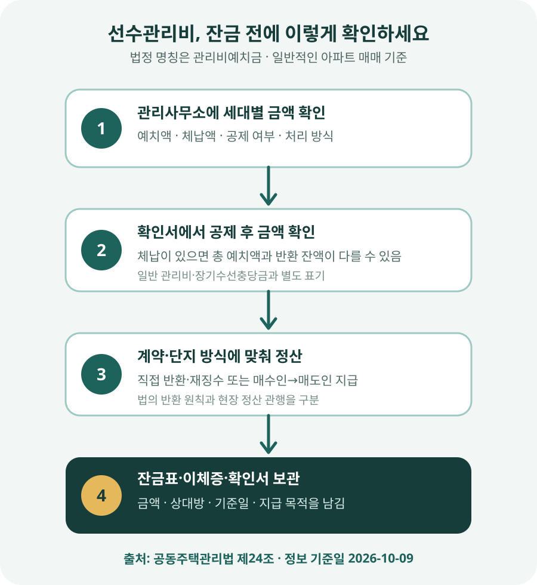

선수관리비는 월 관리비와 무엇이 다를까?
매매 잔금표에 ‘선수관리비’, ‘관리비선수금’, ‘관리비예치금’ 같은 항목이 갑자기 들어가면 지난달 관리비를 미리 내라는 뜻처럼 보일 수 있습니다. 하지만 법에서 쓰는 정확한 표현은 관리비예치금입니다. 아파트 공용부분을 관리하고 운영하는 데 필요한 초기 자금을 소유자로부터 미리 받아 두는 돈입니다.
공동주택관리법 제24조는 관리주체가 공용부분의 관리·운영 등에 필요한 경비를 공동주택의 소유자로부터 징수할 수 있도록 합니다. 매달 전기·수도 사용량과 관리 항목에 따라 부과되는 일반 관리비와 달리, 관리비예치금은 단지 운영을 위한 예치 성격의 돈입니다. 단지마다 명칭과 금액, 관리 방법이 다를 수 있으므로 인터넷의 평당 금액을 적용하지 말고 해당 관리사무소의 장부를 확인해야 합니다.
법의 반환 원칙과 잔금일 관행은 왜 다를까?
법의 출발점은 단순합니다. 소유자가 집을 팔아 소유권을 잃으면 관리주체가 그 소유자에게 관리비예치금을 반환해야 합니다. 다만 그 소유자가 관리비, 사용료, 장기수선충당금 등을 미납했다면 관리주체는 예치금에서 미납액을 먼저 정산하고 나머지만 반환할 수 있습니다.
이를 그대로 처리한다면 관리사무소가 매도인에게 예치금을 돌려주고, 새 소유자인 매수인에게 다시 예치금을 받아야 합니다. 실제 거래에서는 이 두 번의 입출금을 줄이기 위해 매도인이 납부확인서를 제시하고 매수인이 같은 금액을 매도인에게 지급하는 방식이 널리 쓰입니다. 법제처의 찾기쉬운 생활법령정보도 통상 매매 때 매도인이 새 매수인에게 정산받는다고 안내합니다.
여기서 중요한 구분이 있습니다. 법은 관리주체의 반환 의무를 규정하고, 매수인이 매도인에게 직접 돈을 주는 방식은 거래 당사자가 택하는 실무상 정산입니다. 따라서 계약서에 관련 문구가 없고 금액도 확인되지 않았다면 중개사가 적어 준 숫자만 보고 바로 송금하지 마세요. 관리사무소가 직접 반환·재징수하는 단지인지, 당사자 간 승계 정산을 하는지부터 확인합니다.

체납 관리비·장기수선충당금과 어떻게 구분할까?
잔금일에 관리사무소에서 여러 금액을 한꺼번에 안내받으면 선수관리비를 체납 관리비나 장기수선충당금과 섞기 쉽습니다. 세 항목은 돈의 목적과 정산 상대가 다릅니다.
| 항목 | 무슨 돈인가 | 잔금 때 누구 사이에서 확인하나 | 확인 자료 |
|---|---|---|---|
| 관리비예치금 (선수관리비) | 공용부분 관리·운영을 위해 소유자에게 받은 예치금 | 원칙은 관리주체와 종전 소유자, 실무상 매도인·매수인 정산이 흔함 | 예치금 납부·반환·승계 확인서 |
| 일반 관리비·사용료 | 실제 거주·사용 기간에 부과된 비용 | 매도인·매수인이 사용기간과 검침일을 기준으로 정산 | 중간관리비 계산서, 계량기 수치, 완납확인 |
| 장기수선충당금 | 주요 시설의 장기적인 교체·보수를 위해 소유자에게 적립하는 돈 | 세입자가 대신 냈다면 임대인·임차인 사이에서 반환 문제 확인 | 세대별 납부확인서 |
| 체납 관리비 | 기한까지 내지 않은 관리비·사용료 등 | 매도인 책임과 매수인 승계 위험을 구분해 확인 | 체납·완납확인서, 항목별 내역 |
특히 장기수선충당금은 관리비예치금과 이름이 비슷하지만 같은 돈이 아닙니다. 장기수선충당금은 매달 적립되는 금액이고, 임차인이 관리비에 포함해 대신 냈다면 이사 때 집주인에게 돌려받는 문제가 생깁니다. 이미 톺다의 장기수선충당금 반환 안내에서 임대차 정산을 별도로 설명한 이유입니다.
체납 관리비도 별도입니다. 관리비예치금에서 체납액을 공제할 수 있다는 법 규정이 있으므로 매도인이 처음 낸 예치금 전액과 현재 반환 가능한 금액이 다를 수 있습니다. 관리사무소가 예치금 공제와 체납 완납을 어떻게 처리하는지 확인하고, 공제 전 총액을 매수인이 매도인에게 중복 지급하지 않도록 해야 합니다.
잔금일에는 어떤 순서로 정산할까?
정산은 잔금 당일 처음 확인하기보다 2~3영업일 전에 관리사무소에 문의하는 편이 안전합니다. 개인정보 때문에 매수인에게 바로 금액을 알려주지 않는다면 매도인이 직접 신청하거나 중개사와 함께 확인서를 받도록 합니다.
- 단지의 명칭과 처리 방식을 묻습니다. 관리비예치금이 있는지, 관리사무소가 직접 반환·재징수하는지, 매매 당사자 간 승계 정산을 안내하는지 확인합니다.
- 매도인이 확인서를 발급받습니다. 세대, 예치액, 체납액, 공제 여부와 발급일이 표시된 자료인지 봅니다.
- 중간관리비와 분리합니다. 잔금일까지의 사용분, 전기·수도·난방 검침액, 장기수선충당금과 관리비예치금을 각각 적습니다.
- 계약서 특약과 정산표를 대조합니다. 매수인이 매도인에게 지급하기로 했다면 금액·지급일·지급 계좌를 잔금표에 명시합니다.
- 송금과 인수를 기록합니다. 이체 메모에 ‘○○아파트 관리비예치금 정산’처럼 목적을 남기고 확인서 사본을 함께 보관합니다.
‘관리비 정산 60만원’ 대신 일반 관리비 18만원, 관리비예치금 42만원처럼 항목을 나누고 기준일을 적으세요. 그래야 체납 공제나 장기수선충당금이 뒤늦게 발견돼도 어떤 돈을 지급했는지 확인할 수 있습니다.
예치금 42만원, 체납액 9만원이라면
관리사무소 확인 결과 관리비예치금 장부액이 42만원이고, 매도인의 미납 관리비·사용료가 9만원이라고 가정해 보겠습니다. 이 숫자는 설명을 위한 예시이며 단지별 실제 금액은 전혀 다를 수 있습니다.
법에 따르면 관리주체는 미납액을 예치금에서 정산한 뒤 잔액을 반환할 수 있으므로, 그대로 공제한다면 반환 가능한 잔액은 33만원입니다. 그런데 매수인이 확인 없이 매도인에게 42만원을 지급하고 관리사무소도 예치금에서 9만원을 공제하면, 매도인이 실질적으로 9만원을 더 받는 결과가 생길 수 있습니다.
| 확인 항목 | 예시 금액 | 잔금표에 적을 내용 |
|---|---|---|
| 장부상 관리비예치금 | 42만원 | 납부확인서 금액과 발급일 |
| 미납 관리비·사용료 | 9만원 | 어떤 항목을 누가 낼지 |
| 공제 후 반환 가능액 | 33만원 | 관리사무소의 실제 공제 여부 |
| 당사자 간 지급액 | 협의 후 확정 | 중복 공제가 없도록 최종 금액 명시 |
매도인이 체납액 9만원을 먼저 완납하고 관리사무소가 예치금 42만원 전액을 그대로 인정한다면 당사자는 42만원을 정산할 수 있습니다. 반대로 이미 예치금에서 공제됐다면 33만원을 기준으로 보는 것이 자연스럽습니다. 핵심은 산식보다 관리사무소가 실제로 어떤 회계처리를 했는지를 확인하는 것입니다.
세입자가 살거나 체납액이 있으면 어떻게 할까?
세입자가 있는 집을 매수하는 경우
관리비예치금은 소유자에게 징수하는 돈이므로 세입자가 거주하고 있다는 이유만으로 세입자에게 지급하거나 받아서는 안 됩니다. 관리비예치금은 매도인·매수인과 관리주체의 관계를 확인하고, 세입자가 대신 낸 장기수선충당금은 임대인·임차인 사이의 반환 문제로 따로 처리합니다. 임대차 승계 시점에 장기수선충당금을 중간 정산할지, 최종 퇴거 때 새 임대인이 반환할지 서면으로 정해 두는 편이 좋습니다.
매도인이 예치금 영수증을 잃어버린 경우
오래전 최초 납부 영수증이 없더라도 관리사무소 장부에 세대별 예치금이 남아 있는지 확인할 수 있습니다. 종이 영수증이 없다는 이유로 임의의 금액을 추정하지 말고, 관리사무소 명의의 납부확인서나 정산확인서를 새로 발급받으세요. 소유자 확인을 위해 신분증이나 등기사항증명서 등 자료를 요구할 수 있습니다.
계약서에 아무 내용이 없는 경우
계약서에 선수관리비 문구가 없더라도 법상 관리주체의 반환 의무가 사라지는 것은 아닙니다. 다만 매수인이 매도인에게 직접 지급하는 방식과 금액은 자동 확정됐다고 보기 어려우므로, 잔금 전에 관리사무소 처리 방식과 확인 금액을 바탕으로 별도 정산 합의를 남기세요. 이미 잔금을 끝냈다면 계약서, 정산표, 이체 내역과 관리사무소 장부를 대조해 누가 얼마를 받거나 납부했는지부터 복원합니다.
잔금 전에 확인할 체크리스트
- □ 이 단지에서 부르는 ‘선수관리비’가 법상 관리비예치금인지 확인했다.
- □ 관리사무소가 직접 반환·재징수하는지, 당사자 간 정산을 안내하는지 물었다.
- □ 세대별 예치액과 체납액, 공제 여부가 적힌 최신 확인서를 받았다.
- □ 일반 관리비·사용료, 장기수선충당금과 관리비예치금을 분리했다.
- □ 계약 특약과 잔금 정산표에 실제 지급액·상대방·기준일을 적었다.
- □ 지급 목적이 남는 방식으로 송금하고 확인서와 이체증을 함께 보관했다.
자주 묻는 질문
매수인은 선수관리비를 반드시 매도인에게 줘야 하나요?
공동주택관리법은 관리주체가 소유권을 잃은 소유자에게 반환할 의무를 정합니다. 매수인이 매도인에게 직접 지급하는 방식은 통상적인 정산 관행이지만, 구체적인 지급 의무와 금액은 계약·관리규약·관리사무소 처리 방식에 따라 확인해야 합니다. 확인서 없이 중개사의 구두 설명만으로 송금하지 마세요.
선수관리비도 면적에 따라 정해지나요?
단지마다 징수 기준과 금액이 다릅니다. 인터넷에서 말하는 ‘평당 얼마’를 공식 기준처럼 적용할 수 없습니다. 해당 세대의 관리비예치금 명세를 관리사무소에서 확인해야 합니다.
매도인이 체납 관리비를 안 내면 매수인이 떠안나요?
체납 관리비의 승계 범위는 항목에 따라 달라질 수 있고, 대법원 판례는 공용부분 관리비와 전유부분 사용료 등을 구분합니다. 관리비예치금에서는 법에 따라 미납 관리비 등을 공제할 수 있으므로, 먼저 체납 항목과 공제 후 잔액을 확인하세요. 자세한 구분은 전 주인 체납 관리비 안내를 함께 보세요.